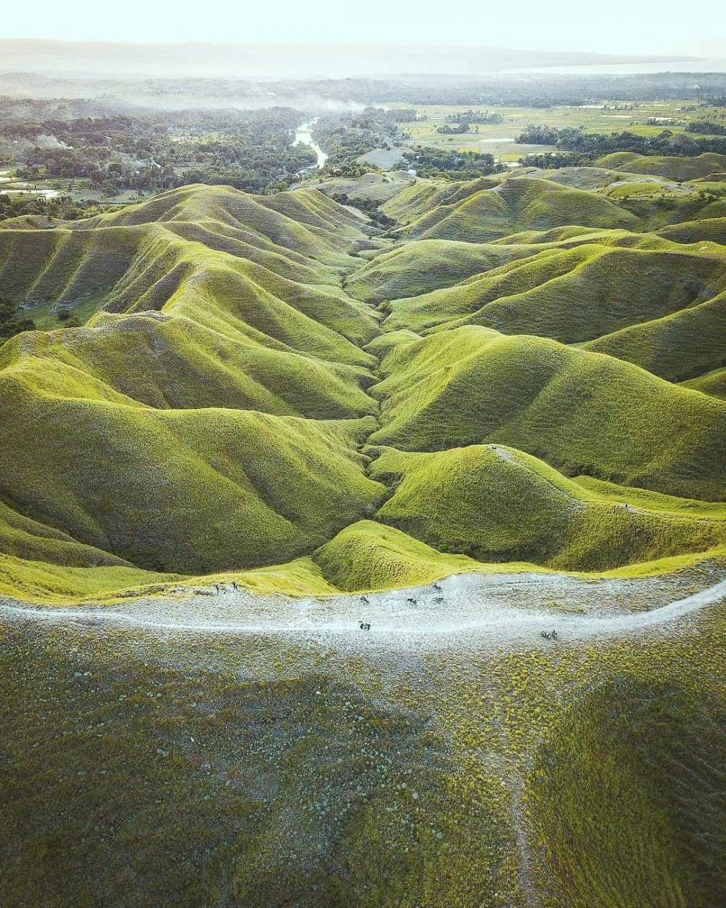
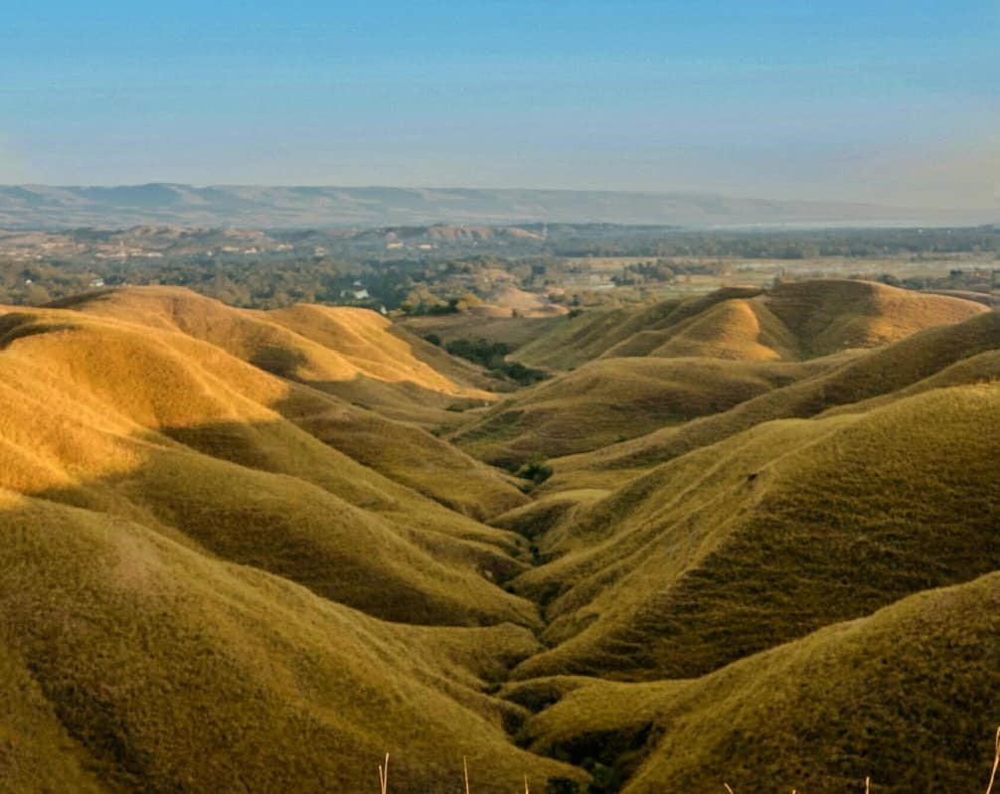
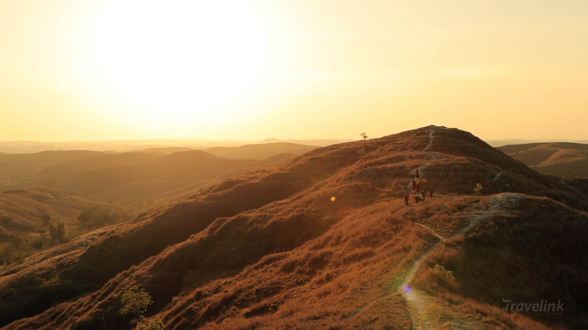
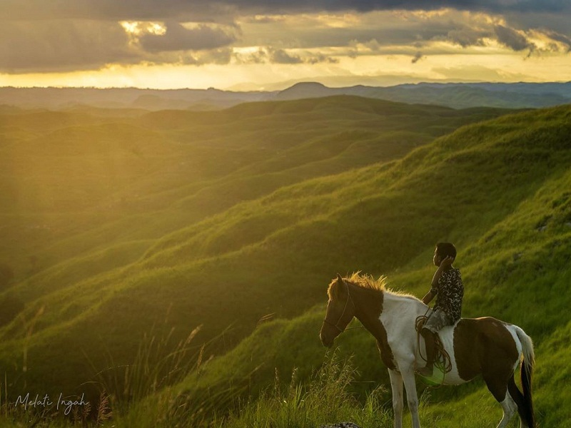
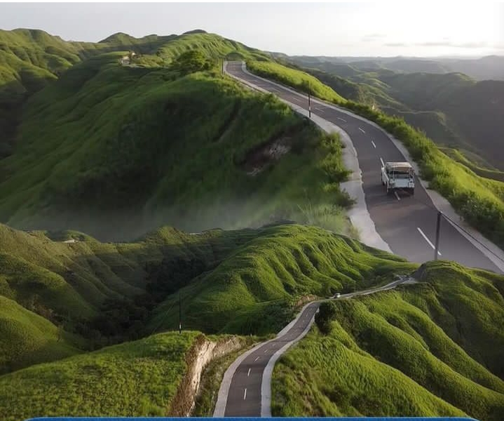
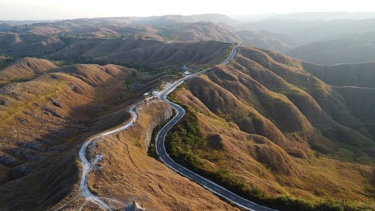
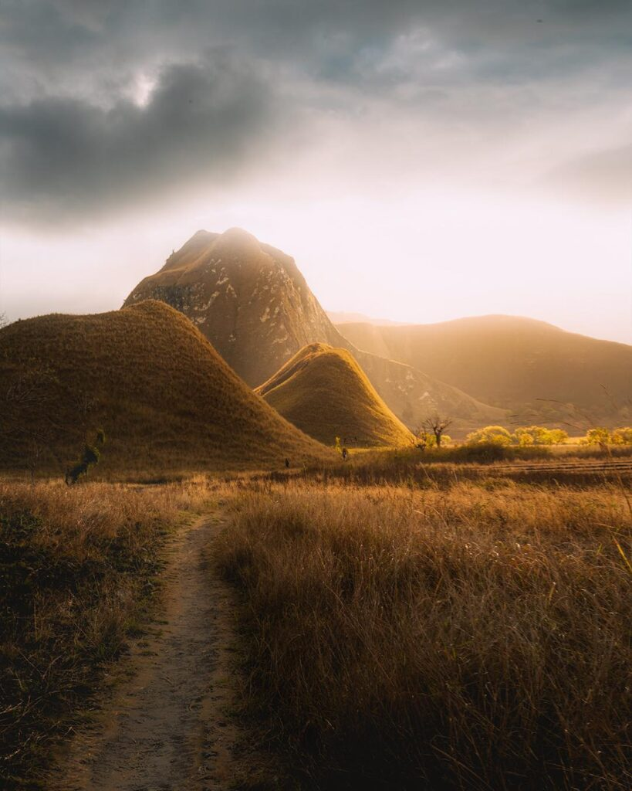
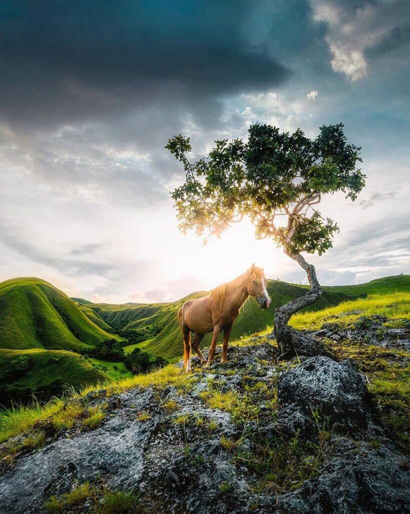

Bukit Tenau



Bukit Tenau merupakan salah satu destinasi wisata alam yang berada di Kabupaten Sumba Timur, Nusa Tenggara Timur.
Tempat ini terkenal dengan pemandangan perbukitan hijau yang luas dan indah. Bukit Tenau memiliki lanskap perbukitan yang bergelombang dengan hamparan rumput yang luas.
Dari puncak bukit, pengunjung dapat melihat pemandangan alam yang sangat indah.
Bukit Warinding



Bukit Warinding merupakan salah satu destinasi wisata alam yang terkenal di Pulau Sumba,
tepatnya berada di Kabupaten Sumba Timur, Nusa Tenggara Timur. Bukit Warinding memiliki hamparan bukit
yang luas dengan bentuk yang unik dan berlapis-lapis. Warna bukit biasanya berubah sesuai musim.
Pada musim hujan, bukit terlihat hijau dan segar, sedangkan pada musim kemarau warnanya berubah
menjadi kekuningan seperti savana yang memberikan pemandangan yang sangat menarik.
Bukit Tanarara



Bukit Tanarara merupakan salah satu destinasi wisata alam yang berada di Kabupaten Sumba Timur, Nusa Tenggara Timur.
Pada musim hujan, bukit terlihat hijau dan segar karena ditumbuhi rumput yang subur. Sedangkan pada musim kemarau,
warna bukit berubah menjadi kekuningan sehingga menyerupai padang savana yang sangat menarik untuk dilihat.
Salah satu daya tarik utama Bukit Tanarara adalah jalan yang membentang di tengah perbukitan. Jalan tersebut terlihat
sangat indah karena dikelilingi oleh bukit-bukit savana di kanan dan kiri. Pemandangan jalan yang
berkelok di antara perbukitan ini sering menjadi spot foto favorit wisatawan
Bukit Mondu



Bukit Mondu merupakan salah satu destinasi wisata alam yang terletak di
Kabupaten Sumba Timur tepatnya di Kecamatan Kanatang, Nusa Tenggara Timur.
Bukit Mondu memiliki hamparan bukit yang bergelombang dengan padang rumput yang luas.
Dari puncak bukit, pengunjung dapat menikmati pemandangan alam yang terbuka dengan padang
rumput yang membentang luas. Suasana di Bukit Mondu masih sangat alami dan tenang,
sehingga cocok bagi wisatawan yang ingin menikmati keindahan alam Sumba serta berfoto
dengan latar perbukitan savana yang indah.